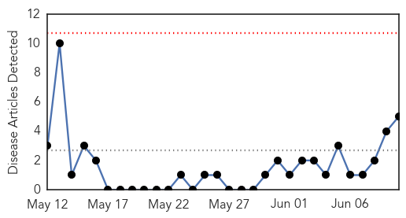
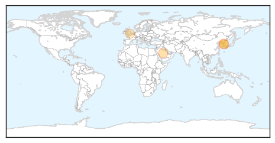
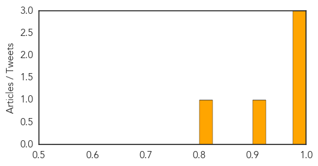
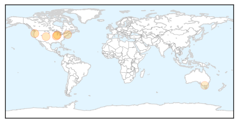
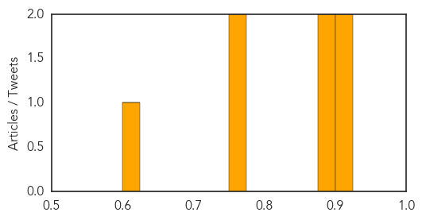

Swine Flu
30-Day Web Trend
0 alerts, 0 warnings

30-Day Twitter Trend
2 alerts, 0 warnings

Article Locations
Article Confidences
Top Articles:
- 0.994
- (EDITORIAL from Korea Herald on June 10)
- 0.987
- Finishing off the war-INSIDE Korea JoongAng Daily
- 0.982
- Phuket, Other Thailand Airports Begin Scans for Mers Virus Passengers
- 0.901
- Council of Europe criticises handling of Swine Flu pandemic
- 0.822
- Boy wins £120,000 damages for narcolepsy triggered by swine flu vaccine
Top Tweets:
-
No tweets found for Jun 10, 2015
Meningitis
30-Day Web Trend
0 alerts, 0 warnings

30-Day Twitter Trend
1 alerts, 0 warnings

Article Locations
Article Confidences
Top Articles:
- 0.916
- UO Students Participating In Meningococcal Vaccine Study . News
- 0.906
- Rep. Greg Harris Rolls Up Sleeve for Meningitis Vaccination
- 0.893
- Religious Exemptions Shouldn't Keep Parents From Vaccinating Their Kids
- 0.878
- UO students participating in meningococcal vaccine study
- 0.775
- Experts warn of newer tick-borne infection
- 0.757
- Robert F. Kennedy, Jr.: Doing the math on meningitis vaccinations
- 0.608
- Single dose of HPV vaccine Cervarix pegged effective against 70% of cervical cancers
Top Tweets:
-
No tweets found for Jun 10, 2015